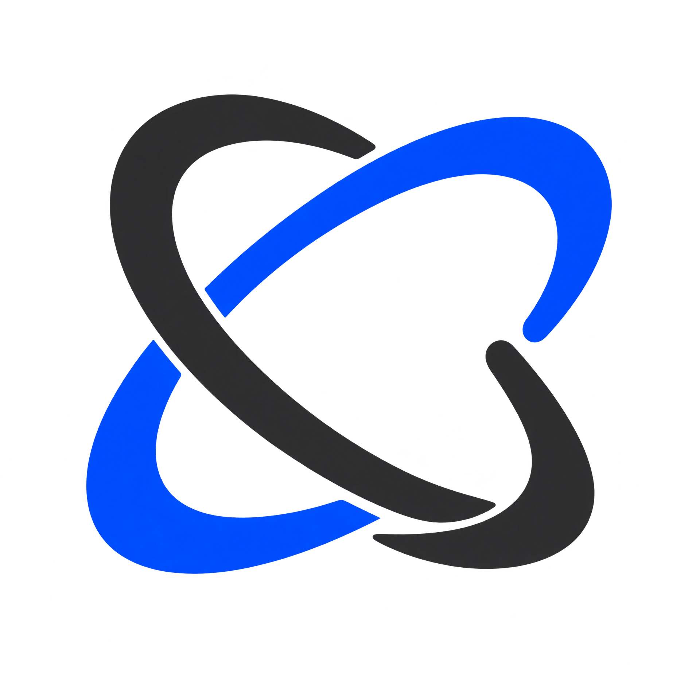

01◌
Estratégia e arquitetura
Mapeamento de cenários, prioridades e dependências para transformar ambição operacional em plano de ação.

NEXUSOrbitTecnologia empresarial, em perspectiva
EDIÇÃO 01 — MODELO INSTITUCIONAL
A Nexus Orbit apresenta uma forma mais clara de conectar estratégia, dados e operação em organizações que se movem todos os dias.
Em vez de apresentar ferramentas isoladas, a Nexus Orbit estrutura conversas que conectam contextos, processos e pessoas. O objetivo é tornar o próximo movimento compreensível, discutível e responsável.
Uma boa página institucional informa o suficiente para orientar sem inventar confiança.
Três planos de leitura
Uma estrutura para adaptar
02 / Campos de atuação
Blocos institucionais que podem ser ajustados à atuação real da organização.
Mapeamento de cenários, prioridades e dependências para transformar ambição operacional em plano de ação.
Organização de fontes, indicadores e rituais de análise para apoiar conversas de negócio consistentes.
Jornadas digitais orientadas à clareza, continuidade e uso responsável de tecnologia.
Ritmos de entrega, documentação e melhoria contínua para que decisões acompanhem a mudança.
A composição dos elementos e seus limites.
O ritmo que torna o avanço acompanhável.
O registro do que sustenta uma decisão.
03 / Método de trabalho
O método transforma temas amplos em um fluxo de entendimento, definição, implementação e aprendizado. Nesta demonstração, cada etapa representa uma prática adaptável — não um serviço contratado ou um resultado garantido.
Tecnologia também pode ter presença física: documentos, rituais, critérios e interfaces precisam conversar entre si.
Delimitar o problema, a decisão em jogo, as pessoas envolvidas e o contexto disponível.
Organizar informações, processos e pontos de dependência que influenciam a operação.
Desenhar a solução em camadas: experiência, dados, rotinas e governança.
Criar um ritmo de revisão que registre mudanças, aprendizados e próximos passos.
“O que a equipe precisa enxergar agora para tomar uma decisão melhor depois?”
Ambientes, ferramentas e linguagem podem tornar discussões técnicas mais acessíveis.
04 / Princípios
05 / Governança
Antes da publicação de uma página institucional, é essencial validar que todo dado apresentado é atual, autorizado e passível de comprovação. Abaixo está um checklist prático para transformar este modelo em um canal corporativo real.
✓ Razão social, CNPJ e nome fantasia verificados
✓ Endereço, e-mail e telefone próprios e ativos
✓ Descrição fiel de produtos, serviços e atuação
✓ Políticas legais revisadas para o tratamento real de dados
✓ Certificações e parcerias somente com comprovação
✓ Cases e depoimentos apenas com autorização documentada
06 / Perguntas frequentes
Não. Nexus Orbit é uma identidade demonstrativa usada para mostrar uma estrutura editorial de site institucional. O conteúdo deve ser adaptado antes de qualquer uso público.
Inclua os dados cadastrais reais, canais de contato, escopo efetivo de atuação, políticas de privacidade, termos de uso e informações comerciais verificáveis.
Não. Os botões mostram apenas um aviso de demonstração. Antes de publicar, conecte-os a formulários, canais ou fluxos oficiais.
Sim. A composição foi criada para preservar a hierarquia e a legibilidade em telas grandes e dispositivos móveis.
Próximo passo